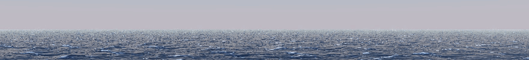

The Forenoon Watch
About
I am a 22 year old C++ programmer with interests in graphics programming, game engine development, and game development. My hobbies include art, music, and maritime history. This page is devoted to my personal programming projects. The projects linked and discussed here are by no means an extensive sample of my work, and many have been lost over time as I changed computers.
I have been programming since 2012, and working on games and game engines for nearly as long. From the start, many of my projects have been driven by my study of maritime history, ship physics, and oceanography. Some of these projects have even led to my publishing an undergraduate research paper on ocean rendering.
Please keep in mind I am a bit new to the blog posting format, but I believe it is the best way for me to convey the value of my fragmented collection of projects.
Contact
Although this website is intended to be somewhat of a portfolio, due to my conviction to personal privacy, I will not put my personal information on this website, nor on my GitHub. If this website was not linked in conjunction with a resume but you would like to discuss employment, please send an inquiry to my email.
GitHubEmail: admin@forenoon.watch
Featured Projects
A quick reference to some of my most interesting projects.-

Rendering an Ocean
Simulating ocean water based on Jerry Tessendorf's 2004 paper.
-
Drawing Outside the Lines I - Greenfoot 3D
3D software renderer written within an educational 2D game engine.
-
Drawing Outside the Lines II - Console Images
Rendering images and GIFs in windows cmd.exe.
-
Block Systems
One of my later hobby engines, features my various experiments with voxel-based physics, buoyancy, and networking.
-

NX Engine
Engine repository that goes in conjunction with block-systems, contains my work with handmade physics engines, rendering with PBR, ECS, and various other features.
Future Projects
Some of my upcoming projects, mostly a planner for myself more than anything.Console Rendering
- OpenGL & Vulkan
Game Engine Programming
- Coroutine-based job scheduler
- Virtual file system
- Engine core - allocators, containers, etc
- Entity Component System
- Vulkan rendering engine
- IBL Skybox Generation Tool
- Physics Engine - Attempt 2
Music/Audio
- Casio WK-6600 live-looper/augmentation tool
Interesting Articles
Interesting references/articles for various topics. This isn't a comprehensive list of the sources I've found/used over the years, but some of the most interesting ones that are tougher to find.- Engine Development
- Rendering
- Game Physics
- Maritime
Inspirations
Blogs, videos, articles, and books written by other programmers that impact my work in a large way.People:
- Eskil Steenberg
- Joel Yliluoma (Bisqwit)
- Arseny Kapoulkine
- Sean T. Barrett
- Erin Catto
- Randy Gaul
- bennyqbd/thebennybox
Topics:
Drawing Outside the Lines II - Console Images

October 21, 2021
Background
Ever since I started programming C++ back in my freshman year of high school, I wanted to be able to manipulate graphics in the console. Most C++ programming courses begin and end with user I/O handled through std::cin and std::cout, with no mention of graphics or even alternate text colors. During my time in that course, "Programming in C++", I would spend extra time when I got home from school digging through the Windows API documentation and finding functions like SetConsoleTextAttribute, SetConsoleCursorPosition, and GetAsyncKeyState which allowed me to use cmd as a rudimentary window for making actual interactive games. In fact, for my final project I implemented Battleship with 16 color text-block rendering and full mouse and keyboard support. Pictured is the title screen of the game as it appears today, and sadly it is mostly nonfunctional on Windows 10.
{kind=link}
Even back then, through my searching for ways to render on the console, I had seen discussion on using SetPixel on the console window, but at the time I did not understand what I was doing well enough to make it work. Recently however, I decided on a whim to try again, and managed to manipulate the console's pixels, and with further experimentation I was even able to draw bitmaps.
Implementation
The fundamental mechanics behind rendering an image to the console are acquiring a GDI Device Context handle (HDC) to the console window, and creating Device Independent Bitmaps (DIB) to render to the screen. Getting the console HDC is a simple matter of acquiring the console window handle (HWND) via FindWindowA("ConsoleWindowClass", NULL), and getting its context via the GDI function GetDC.
With the console's HDC you must then create a compatible device context to be used for each bitmap via CreateCompatibleDC. This HDC is the handle to the context of the bitmap you will create, and is used for both creating the bitmap and actually rendering it to the console window. With a correctly configured bitmap header, you can then create a device indepentent bitmap for your image with CreateDIBSection. This function leaves you with a void* pointer to the memory for the bitmap, which can be filled with image data acquired by any means. (more detail provided ingraphic.cpp).
For this project, I opted to useSTB Image,as it is a lightweight and convenient solution for loading still images and animated GIFs. To get the data in a format compatible with the DIB, the images must be flipped vertically and have their RGB data reordered to BGR. The GIF animation is handled by copying a given frame's image data into the bitmap memory based on the frame delay timings read from the GIF.
To actually draw the image to the screen, the function StretchBlt is used, which can resize any sized image to fit in a convenient size for the console, which I have set to a height constraint of 10 console lines.
{kind=link}
Repository Link
GitHub - Console ImagesDrawing Outside the Lines I - Greenfoot 3D
October 20, 2021
Introduction
Around sophomore year of high school, in Java class, I wrote a 3D software rendering extension to the 2D educational "game engine"Greenfoot.It is perhaps my first instance of attempting to "draw outside the lines" and render things where they don't belong. The original intent was to use it for the final project, which was to make a game with a group of people, but I discarded that idea pretty quickly since making a 3D game from scratch in a few weeks is a much taller order than making a barebones rendering engine. The engine features scanline-rasterized triangles, depth buffering, texture sampling, as well as various attempts at handy game engine features such as AABB colliders, billboard renderers, camera controllers, and sound emitters.

{kind=link}
Implementation
The fundamental mechanic which allows the engine to even be possible is the API function GreenfootImage.getAwtImage() which exposes access to the underlying BufferedImage. With access to the BufferedImage, I can access its buffer as an integer array and perform very fast writes of pixel data. The core of the rendering engine is implemented by setting the background of the game to be a special GreenfootImage subclass called RenderContext, through which I perform most of the triangle rasterization log and pixel manipulation logic, which ultimately gets stored in the image buffer.
Unfortunately, the biggest drawback is that the underlying Actor system within Greenfoot cannot be used in conjunction with the 3D engine, partially due to the fact that the entirety of the game is being rendered on the world background. This resulted in the implementation of the GameObject and GameComponent classes, in order to make my own actor system in place of Greenfoot's.
{kind=link}
Repository Link
GitHub - Greenfoot3DRendering an Ocean
October 19, 2021
Introduction
Ocean rendering is a complex and challenging problem for real time rendering, as oceans are exceedingly large, constantly changing, and comprised of a large volume of translucent material that interacts with light in complex ways. When rendering an ocean, there are three major components for creating a realistic real time ocean environment: the waveform, the world model, and the lighting.
Waveform
One of the most fundamental aspects of a realistic ocean is its shape, which is determined by a simulation of its many compounding waves. There are several methods to accomplish this, with some of the most popular being either Gerstner waves, or Jerry Tessendorf's method of applying an inverse Fourier transform to a grid of wave data in the frequency domain, which to my knowledge does not have as slick of a name, so I will henceforth refer to it as Tessendorf waves.
For my simulation, I chose Tessendorf waves over Gerstner waves, as Gerstner waves require a much slower, iterative calculation of waveforms comprised of multiplying and summing sine waves for each point of interest. While this is quite intuitive and simple to implement, it is not as efficient for the large number of waves required to make an ocean look realistic. Tessendorf's method provides an obvious optimization to summing sine waves, which is to utilize the Fast Fourier Transform (FFT) and apply it to a set of wave data in the frequency domain. Listed in hispaperis a realistic-looking ocean wave frequency model called the Phillips spectrum, which provides a conveniently tileable set of waves in an nxn grid.
World Model
Since the ocean is very large, and often in the context of a game, essentially infinite, various tricks have to be utilized to only render the parts of the ocean relevant to the observer. Ideally, this means rendering no more than what is in the viewport. While multiple methods exist for this, with varying trade-offs between efficiency and detail, I chose Claes Johanson'sprojected gridmethod. This method takes a grid of vertices and projects them with a smooth, continuous level-of-detail onto the intersection of the camera frustum and the ocean plane. This results in extremely efficient utilization of rendered geometry.

Lighting
In recent years, a common method of real-time lighting for games has been Physically Based Rendering (PBR) combined with Image Based Lighting (IBL). Through the use of heuristic equations that attempt to mimic light interacting with surfaces of various roughness and metallicity, much of the work for rendering a plausible ocean is already included in the implementation of these equations, which include diffuse lighting, specular lighting, ambient lighting (through IBL), environmental reflection maps (also through IBL), and the Fresnel effect. Some effects are not present however, such as translucency, transparency, and subsurface scattering, which I have made attempts at implementing with various degrees of success.

Catmull-Rom Interpolation
Since I chose to use a fairly low resolution texture for my Tessendorf ocean tile (256x256), mapping the waves onto the world model left it with some artifacts. To alleviate this I implemented Catmull-Rom interpolation of the ocean's displacement map to smooth out the sampling. This method allows me to get more detail out of the ocean data at the cost of more texture samples per vertex.
{kind=link}
{kind=link}